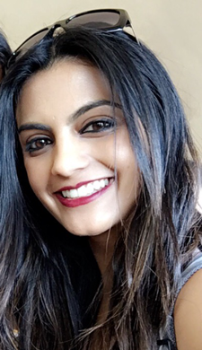
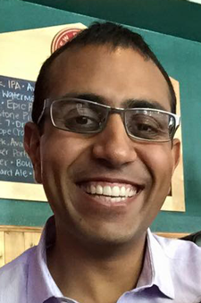

Our Story
abc
The Wedding Party
| Leah Dog of Honor  |
lajsdlkfjsaldfjlksadfjklsdjfl lajsdlkfjsaldfjlksadfjklsdjfl lajsdlkfjsaldfjlksadfjklsdjfl lajsdlkfjsaldfjlksadfjklsdjfl lajsdlkfjsaldfjlksadfjklsdjfl |
|---|---|
Jennifer Maid of Honor  |
Jennifer helped teach me how to read, she was the one who dropped me off and picked me up from school, she was the first person to attempt to teach me how to drive a stick shift, and she always brought me along to hang out with her and her friends regardless of how embarrassing it was for her. Jennifer has always made it a priority to protect me and as we have gotten older, her protection has extended from my physical well-being to my mental and emotional well-being. I can’t imagine celebrating anything without her support, let alone my wedding day! |
Ashley Maid of Honor |
Ashley and I could not be more different but I owe a lot of who I am today to her and the crazy relationship we have always had. We constantly challenge each other, maintain high expectations for one another, and stand firm in our personal beliefs and values. Ash has always come through for me when I really needed her, crafting, re-purposing, thrifting, or hand-making whatever it took to get the job done and expecting nothing in return. For this, and so much more, I am forever grateful to have her by my side on my wedding day. |
Cassandra Bridesmaid  |
I met Cassandra while playing Tennis at Thornton High School. She was the first person who not only genuinely believed I had talent, but she also encouraged me to work for what I thought at the time was an unrealistic goal. It’s no secret that Cassandra has a huge heart and is one of the most caring people you will ever meet, something I have always admired her for. She is, always has been, and now will forever be my big sister! |
Arti Bridesmaid  |
I met Arti soon when she joined the Patidar family. Throughout the years all group outings and events typically consisted of a strong male presence and mass amounts of fried food but I could always count on Arti to be there as a reprieve from the flowing testosterone and meat sweats. As life continues to become more complex and challenging, I’ve realized things are never quite as intimidating or scary knowing I’ve got the support of her friendship. It would be an understatement to say I’m thankful to have her standing with me on mine and Calvin's big day. Reflecting on the journey we have had together as friends up to this point makes me beyond excited for the adventure ahead! |
Vinay Best Man  |
This a true Bollywood fairytale. Vinay and I met the first day of high school. Our parents dropped us off a good 40 minutes before class started and we were the only two in the classroom. He was a fat Indian kid and I was a scrawny Asian kid. Naturally, the social awkwardness would grow into a friendship. Vinay introduced me to the world of Indian food and I introduced him to steak. We would later become roommates in college, gambling partners, and family. I've always been able to depend on this guy, no matter the circumstance. I am very fortunate to have such a great friend. |
Minh Best Man  |
Wow, isn't he gorgeous? I first met this sassy gentleman in high school. Despite his lack of interest in sports, we were able to find common ground in our love for R&B slow jams, Wendy's dollar menu, and each other (lol). At our Junior year retreat, Minh and I were partners for the Jacob's ladder obstacle had cultivated a substantial amount of mass and was too... muscular... to lift myself up. We had nearly every class together then and both majored in Biochemistry at CU Boulder. I always knew he would go on and do great things. |
Michael Groomsman  |
lajsdlkfjsaldfjlksadfjklsdjfl lajsdlkfjsaldfjlksadfjklsdjfl lajsdlkfjsaldfjlksadfjklsdjfl lajsdlkfjsaldfjlksadfjklsdjfl lajsdlkfjsaldfjlksadfjklsdjfl |
{kind=link}